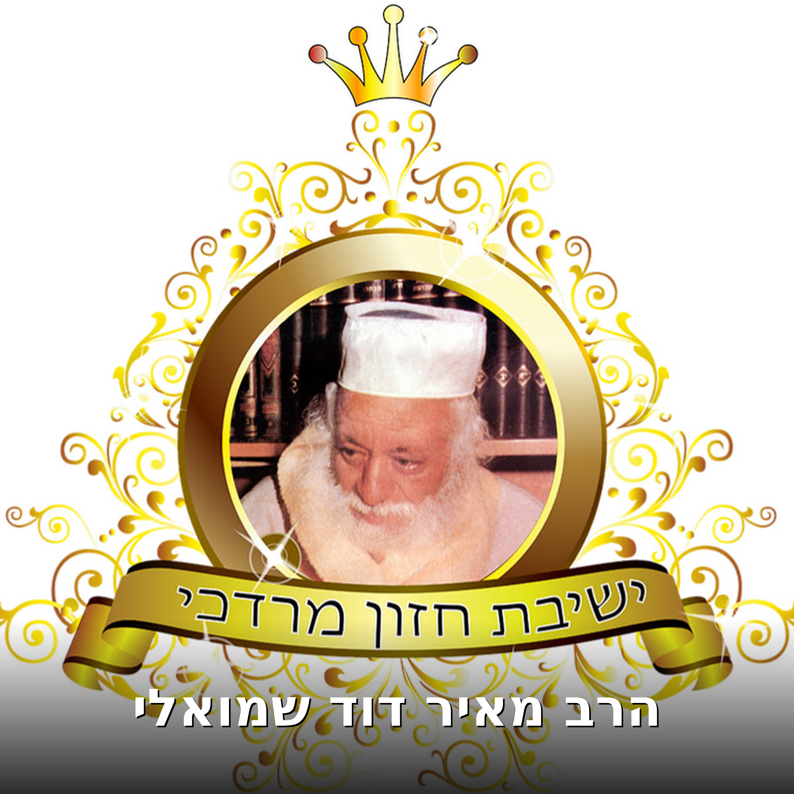

הרב מאיר דוד שמואלי
ברוכים הבאים לפודקאסט של הרב מאיר דוד שמואלי, ראש ישיבת חזון מרדכי בהרצליה. הרב, בנו של הצדיק המקובל רבי שלום שמואלי זצוק"ל, ממשיך בדרך המשפחה בהנהלת ישיבה המעניקה עומק ויסוד ללומדיה. בפודקאסט זה תוכלו ללמוד ישירות מפי מורנו ורבנו תורה עמוקה בפרדס התורה — מקרא, משנה, גמרא וקבלה — תוך דגש על מידות טובות ויראת שמיים אמתית המשנה את החיים. כל שיעור הוא הזמנה להיות חלק מעולמה של ישיבה חיה המעבדת תורה בשקידה וביושר.
האזנה לפודקאסט מתן לכם חופש שלא היה קיים עד היום. בנסיעתכם לעבודה, בהליכתכם ברחוב, בעת ביצוע המטלות היומיומיות — הטלפון בכיס שלכם הופך לגשר ישיר לתורה וללמידה. אין צורך בסדר ישיבה קבוע או בדיסק להעלות למכונית; הלימוד משלחק כל מקום לבית ישיבה. בכל רגע פנוי, בכל שעה של היום, אתם יכולים להמשיך בדרך העלייה הרוחנית שלכם ולהעשיר את ידיעתכם בתורה.
במעקב אחר הפרקים שתשמעו, תוכלו להרגיש את התקדמותכם ואת ההשגים המצטברים שלכם. כל פרק הוא צ
Tous les épisodes

הרב מאיר דוד שמואלי שליט"א - שידור חי יום ב - פרשת אמור תשפ"ו
לתרומה לשותפות בפעילות הישיבה או לקבלת ייעוץ מהרב מאיר דוד שמואלי שליט"א: https://nedar.im/aDPy או בטלפון : 03-778-1778

הרב מאיר דוד שמואלי שליט"א - שידור חי יום א - פרשת אמור תשפ"ו
לתרומה לשותפות בפעילות הישיבה או לקבלת ייעוץ מהרב מאיר דוד שמואלי שליט"א: https://nedar.im/aDPy או בטלפון : 03-778-1778

הרב מאיר דוד שמואלי - הלכות שבת שולחן ערוך סימן רס"ב
הרב מאיר דוד שמואלי שליט"א השיעור המרכזי של הרב מאיר דוד שמואלי שליט"א, הנמסר במוסדות התורה "חזון מרדכי" בהרצליה, ע"ש המקובל האלקי רבינו מרדכי שרעבי זצוק"ל. 🗓️ השיעור המרכזי נמסר בימי שני ורביעי בשע

הרב מאיר דוד שמואלי - תיקון ליל שישי אחרי - קדושים תשפ"ו
הרב מאיר דוד שמואלי שליט"א השיעור המרכזי של הרב מאיר דוד שמואלי שליט"א, הנמסר במוסדות התורה "חזון מרדכי" בהרצליה, ע"ש המקובל האלקי רבינו מרדכי שרעבי זצוק"ל. 🗓️ השיעור המרכזי נמסר בימי שני ורביעי בשע

הרב מאיר דוד שמואלי - הלכות שבת שולחן ערוך סימן רס"א
הרב מאיר דוד שמואלי שליט"א השיעור המרכזי של הרב מאיר דוד שמואלי שליט"א, הנמסר במוסדות התורה "חזון מרדכי" בהרצליה, ע"ש המקובל האלקי רבינו מרדכי שרעבי זצוק"ל. 🗓️ השיעור המרכזי נמסר בימי שני ורביעי בשע

הרב מאיר דוד שמואלי - האוצר היומי סדר רמ"ג
הרב מאיר דוד שמואלי שליט"א השיעור המרכזי של הרב מאיר דוד שמואלי שליט"א, הנמסר במוסדות התורה "חזון מרדכי" בהרצליה, ע"ש המקובל האלקי רבינו מרדכי שרעבי זצוק"ל. 🗓️ השיעור המרכזי נמסר בימי שני ורביעי בשע

הרב מאיר דוד שמואלי - האוצר היומי סדר רמ"ה
הרב מאיר דוד שמואלי שליט"א השיעור המרכזי של הרב מאיר דוד שמואלי שליט"א, הנמסר במוסדות התורה "חזון מרדכי" בהרצליה, ע"ש המקובל האלקי רבינו מרדכי שרעבי זצוק"ל. 🗓️ השיעור המרכזי נמסר בימי שני ורביעי בשע

הרב מאיר דוד שמואלי - האוצר היומי סדר רמ"ד
הרב מאיר דוד שמואלי שליט"א השיעור המרכזי של הרב מאיר דוד שמואלי שליט"א, הנמסר במוסדות התורה "חזון מרדכי" בהרצליה, ע"ש המקובל האלקי רבינו מרדכי שרעבי זצוק"ל. 🗓️ השיעור המרכזי נמסר בימי שני ורביעי בשע

הרב מאיר דוד שמואלי - האוצר היומי סדר רמ"ב
הרב מאיר דוד שמואלי שליט"א השיעור המרכזי של הרב מאיר דוד שמואלי שליט"א, הנמסר במוסדות התורה "חזון מרדכי" בהרצליה, ע"ש המקובל האלקי רבינו מרדכי שרעבי זצוק"ל. 🗓️ השיעור המרכזי נמסר בימי שני ורביעי בשע

הרב מאיר דוד שמואלי - הלכות שבת שולחן ערוך סימן ר"ס
הרב מאיר דוד שמואלי שליט"א השיעור המרכזי של הרב מאיר דוד שמואלי שליט"א, הנמסר במוסדות התורה "חזון מרדכי" בהרצליה, ע"ש המקובל האלקי רבינו מרדכי שרעבי זצוק"ל. 🗓️ השיעור המרכזי נמסר בימי שני ורביעי בשע

הרב מאיר דוד שמואלי - צדיק נסתר
הרב מאיר דוד שמואלי שליט"א השיעור המרכזי של הרב מאיר דוד שמואלי שליט"א, הנמסר במוסדות התורה "חזון מרדכי" בהרצליה, ע"ש המקובל האלקי רבינו מרדכי שרעבי זצוק"ל. 🗓️ השיעור המרכזי נמסר בימי שני ורביעי בשע

שיחה בנושא מאורעות תשפ"ד
הרב מאיר דוד שמואלי שליט"א השיעור המרכזי של הרב מאיר דוד שמואלי שליט"א, הנמסר במוסדות התורה "חזון מרדכי" בהרצליה, ע"ש המקובל האלקי רבינו מרדכי שרעבי זצוק"ל. 🗓️ השיעור המרכזי נמסר בימי שני ורביעי בשע

הרב מאיר דוד שמואלי שליט"א - שידור חי יום ד - פרשת אחרי - קדושים תשפ"ו
לתרומה לשותפות בפעילות הישיבה או לקבלת ייעוץ מהרב מאיר דוד שמואלי שליט"א: https://nedar.im/aDPy או בטלפון : 03-778-1778

הכנה ליום ל"ג בעומר - המקובל הרב בניהו שמואלי שליט"א
לתרומה לשותפות בפעילות הישיבה או לקבלת ייעוץ מהרב מאיר דוד שמואלי שליט"א: https://nedar.im/aDPy או בטלפון : 03-778-1778

הרב מאיר דוד שמואלי - הלכות שבת סימן רנ"ז סעיף א - ז
הרב מאיר דוד שמואלי שליט"א השיעור המרכזי של הרב מאיר דוד שמואלי שליט"א, הנמסר במוסדות התורה "חזון מרדכי" בהרצליה, ע"ש המקובל האלקי ...

הרב מאיר דוד שמואלי - הלכות שבת סימן רנ"ז סעיף ח - הסוף
הרב מאיר דוד שמואלי שליט"א השיעור המרכזי של הרב מאיר דוד שמואלי שליט"א, הנמסר במוסדות התורה "חזון מרדכי" בהרצליה, ע"ש המקובל האלקי ...

הרב מאיר דוד שמואלי - תיקון ליל שישי תזריע מצורע תשפ"ו
הרב מאיר דוד שמואלי שליט"א השיעור המרכזי של הרב מאיר דוד שמואלי שליט"א, הנמסר במוסדות התורה "חזון מרדכי" בהרצליה, ע"ש המקובל האלקי ...

הרב מאיר דוד שמואלי - הלכות שבת סימן רנ"ה - רנ"ו
הרב מאיר דוד שמואלי שליט"א השיעור המרכזי של הרב מאיר דוד שמואלי שליט"א, הנמסר במוסדות התורה "חזון מרדכי" בהרצליה, ע"ש המקובל האלקי ...

הרב מאיר דוד שמואלי - הלכות שבת סימן רנ"ח
הרב מאיר דוד שמואלי שליט"א השיעור המרכזי של הרב מאיר דוד שמואלי שליט"א, הנמסר במוסדות התורה "חזון מרדכי" בהרצליה, ע"ש המקובל האלקי ...

הרב מאיר דוד שמואלי - האוצר היומי סדר רל"ט
הרב מאיר דוד שמואלי שליט"א השיעור המרכזי של הרב מאיר דוד שמואלי שליט"א, הנמסר במוסדות התורה "חזון מרדכי" בהרצליה, ע"ש המקובל האלקי ...

הרב מאיר דוד שמואלי - הלכות שבת סימן רנ"ד
הרב מאיר דוד שמואלי שליט"א השיעור המרכזי של הרב מאיר דוד שמואלי שליט"א, הנמסר במוסדות התורה "חזון מרדכי" בהרצליה, ע"ש המקובל האלקי ...

הרב מאיר דוד שמואלי שליט"א - שידור חי יום ב - פרשת אחרי - קדושים תשפ"ו
לתרומה לשותפות בפעילות הישיבה או לקבלת ייעוץ מהרב מאיר דוד שמואלי שליט"א: https://nedar.im/aDPy או בטלפון : 03-778-1778.

הרב מאיר דוד שמואלי - האוצר היומי סדר רמ"א
הרב מאיר דוד שמואלי שליט"א השיעור המרכזי של הרב מאיר דוד שמואלי שליט"א, הנמסר במוסדות התורה "חזון מרדכי" בהרצליה, ע"ש המקובל האלקי ...

הרב מאיר דוד שמואלי - האוצר היומי סדר ר"מ
הרב מאיר דוד שמואלי שליט"א השיעור המרכזי של הרב מאיר דוד שמואלי שליט"א, הנמסר במוסדות התורה "חזון מרדכי" בהרצליה, ע"ש המקובל האלקי ...

הרב מאיר דוד שמואלי - האוצר היומי סדר רל"ח
הרב מאיר דוד שמואלי שליט"א השיעור המרכזי של הרב מאיר דוד שמואלי שליט"א, הנמסר במוסדות התורה "חזון מרדכי" בהרצליה, ע"ש המקובל האלקי רבינו מרדכי שרעבי זצוק"ל. 🗓️ השיעור המרכזי נמסר בימי שני ורביעי בשע

הרב מאיר דוד שמואלי - האוצר היומי סדר ר"כ
הרב מאיר דוד שמואלי שליט"א השיעור המרכזי של הרב מאיר דוד שמואלי שליט"א, הנמסר במוסדות התורה "חזון מרדכי" בהרצליה, ע"ש המקובל האלקי רבינו מרדכי שרעבי זצוק"ל. 🗓️ השיעור המרכזי נמסר בימי שני ורביעי בשע

הרב מאיר דוד שמואלי שליט"א - שידור חי יום ד- פרשת יתרו -שובבים תשפ"ו
לתרומה לשותפות בפעילות הישיבה או לקבלת ייעוץ מהרב מאיר דוד שמואלי שליט"א: https://nedar.im/aDPy או בטלפון : 03-778-1778

הרב מאיר דוד שמואלי - הרב מאיר דוד שמואלי - סימן רל"ב • דברים האסורים לעשות בשעת המנחה • סעיף ג'
הרב מאיר דוד שמואלי שליט"א השיעור המרכזי של הרב מאיר דוד שמואלי שליט"א, הנמסר במוסדות התורה "חזון מרדכי" בהרצליה, ע"ש המקובל האלקי רבינו מרדכי שרעבי זצוק"ל. 🗓️ השיעור המרכזי נמסר בימי שני ורביעי בשע

הרב מאיר דוד שמואלי - האוצר היומי סדר קע"ה
הרב מאיר דוד שמואלי שליט"א השיעור המרכזי של הרב מאיר דוד שמואלי שליט"א, הנמסר במוסדות התורה "חזון מרדכי" בהרצליה, ע"ש המקובל האלקי רבינו מרדכי שרעבי זצוק"ל. 🗓️ השיעור המרכזי נמסר בימי שני ורביעי בשע

הרב מאיר דוד שמואלי - שתי דברים
הרב מאיר דוד שמואלי שליט"א השיעור המרכזי של הרב מאיר דוד שמואלי שליט"א, הנמסר במוסדות התורה "חזון מרדכי" בהרצליה, ע"ש המקובל האלקי רבינו מרדכי שרעבי זצוק"ל. 🗓️ השיעור המרכזי נמסר בימי שני ורביעי בשע

הרב מאיר דוד שמואלי - מי כעמך ישראל
הרב מאיר דוד שמואלי שליט"א השיעור המרכזי של הרב מאיר דוד שמואלי שליט"א, הנמסר במוסדות התורה "חזון מרדכי" בהרצליה, ע"ש המקובל האלקי רבינו מרדכי שרעבי זצוק"ל. 🗓️ השיעור המרכזי נמסר בימי שני ורביעי בשע

הרב מאיר דוד שמואלי - ביזיונות
הרב מאיר דוד שמואלי שליט"א השיעור המרכזי של הרב מאיר דוד שמואלי שליט"א, הנמסר במוסדות התורה "חזון מרדכי" בהרצליה, ע"ש המקובל האלקי רבינו מרדכי שרעבי זצוק"ל. 🗓️ השיעור המרכזי נמסר בימי שני ורביעי בשע

הרב מאיר דוד שמואלי - השיעור המרכזי פרשת וירא תשפ"ו
הרב מאיר דוד שמואלי שליט"א השיעור המרכזי של הרב מאיר דוד שמואלי שליט"א, הנמסר במוסדות התורה "חזון מרדכי" בהרצליה, ע"ש המקובל האלקי רבינו מרדכי שרעבי זצוק"ל. 🗓️ השיעור המרכזי נמסר בימי שני ורביעי בשע

הרב מאיר דוד שמואלי - הלכות ברכות סימן ר"ד
הרב מאיר דוד שמואלי שליט"א השיעור המרכזי של הרב מאיר דוד שמואלי שליט"א, הנמסר במוסדות התורה "חזון מרדכי" בהרצליה, ע"ש המקובל האלקי רבינו מרדכי שרעבי זצוק"ל. 🗓️ השיעור המרכזי נמסר בימי שני ורביעי בשע

הרב מאיר דוד שמואלי - שידור חי - היום המכריע הגיע
הרב מאיר דוד שמואלי שליט"א השיעור המרכזי של הרב מאיר דוד שמואלי שליט"א, הנמסר במוסדות התורה "חזון מרדכי" בהרצליה, ע"ש המקובל האלקי רבינו מרדכי שרעבי זצוק"ל. 🗓️ השיעור המרכזי נמסר בימי שני ורביעי בשע

הרב מאיר דוד שמואלי שליט"א - שידור חי מהשיעור המרכזי כולל סליחות
לתרומה לשותפות בפעילות הישיבה או לקבלת ייעוץ מהרב מאיר דוד שמואלי שליט"א: https://nedar.im/aDPy פרטי התקשרות: 📞 משרד: 03-778-1778 📧 דוא"ל: chazonmordechai@gmail.com 💬 ווטסאפ: 054-574-0545

הרב מאיר דוד שמואלי - האוצר היומי סדר נד'
הרב מאיר דוד שמואלי שליט"א השיעור המרכזי של הרב מאיר דוד שמואלי שליט"א, הנמסר במוסדות התורה "חזון מרדכי" בהרצליה, ע"ש המקובל האלקי רבינו מרדכי שרעבי זצוק"ל. 🗓️ השיעור המרכזי נמסר בימי שני ורביעי בשע

הרב מאיר דוד שמואלי - נמאס
הרב מאיר דוד שמואלי שליט"א השיעור המרכזי של הרב מאיר דוד שמואלי שליט"א, הנמסר במוסדות התורה "חזון מרדכי" בהרצליה, ע"ש המקובל האלקי רבינו מרדכי שרעבי זצוק"ל. 🗓️ השיעור המרכזי נמסר בימי שני ורביעי בשע

הרב מאיר דוד שמואלי - חצי כוס מלאה
הרב מאיר דוד שמואלי שליט"א השיעור המרכזי של הרב מאיר דוד שמואלי שליט"א, הנמסר במוסדות התורה "חזון מרדכי" בהרצליה, ע"ש המקובל האלקי רבינו מרדכי שרעבי זצוק"ל. 🗓️ השיעור המרכזי נמסר בימי שני ורביעי בשע

הילולת האר"י הקדוש תשפ"ה - המקובל הרב שמואל בן שושן שליט”א
לתרומה לשותפות בפעילות הישיבה או לקבלת ייעוץ מהרב מאיר דוד שמואלי שליט"א: https://nedar.im/aDPy פרטי התקשרות: 📞 משרד: 03-778-1778 📧 דוא"ל: chazonmordechai@gmail.com 💬 ווטסאפ: 054-574-0545

הרב מאיר דוד שמואלי - הלכות בציעת הפת קס"ו - קס"ז
הרב מאיר דוד שמואלי שליט"א השיעור המרכזי של הרב מאיר דוד שמואלי שליט"א, הנמסר במוסדות התורה "חזון מרדכי" בהרצליה, ע"ש המקובל האלקי רבינו מרדכי שרעבי זצוק"ל. 🗓️ השיעור המרכזי נמסר בימי שני ורביעי בשע

הרב מאיר דוד שמואלי - הלכות בית הכנסת סימן קנ"א סעיף א-ה
הרב מאיר דוד שמואלי שליט"א השיעור המרכזי של הרב מאיר דוד שמואלי שליט"א, הנמסר במוסדות התורה "חזון מרדכי" בהרצליה, ע"ש המקובל האלקי רבינו מרדכי שרעבי זצוק"ל. 🗓️ השיעור המרכזי נמסר בימי שני ורביעי בשע

הרב מאיר דוד שמואלי - הלכות נשיאת כפים סימן קכ"ח סעיפים מב - מה
הרב מאיר דוד שמואלי שליט"א השיעור המרכזי של הרב מאיר דוד שמואלי שליט"א, הנמסר במוסדות התורה "חזון מרדכי" בהרצליה, ע"ש המקובל האלקי רבינו מרדכי שרעבי זצוק"ל. 🗓️ השיעור המרכזי נמסר בימי שני ורביעי בשע

אזכרה במלאות שנים עשר חודש לזקן המקובלים כמוהר"ר שלום שמואלי זצ"ל
לתרומה לשותפות בפעילות הישיבה או לקבלת ייעוץ מהרב מאיר דוד שמואלי שליט"א: https://nedar.im/aDPy פרטי התקשרות: 📞 משרד: 03-778-1778 📧 דוא"ל: chazonmordechai@gmail.com 💬 ווטסאפ: 054-574-0545

הרב מאיר דוד שמואלי - נודניקים
הרב מאיר דוד שמואלי שליט"א השיעור המרכזי של הרב מאיר דוד שמואלי שליט"א, הנמסר במוסדות התורה "חזון מרדכי" בהרצליה, ע"ש המקובל האלקי רבינו מרדכי שרעבי זצוק"ל. 🗓️ השיעור המרכזי נמסר בימי שני ורביעי בשע

הרב מאיר דוד שמואלי - חיים טובים
הרב מאיר דוד שמואלי שליט"א השיעור המרכזי של הרב מאיר דוד שמואלי שליט"א, הנמסר במוסדות התורה "חזון מרדכי" בהרצליה, ע"ש המקובל האלקי רבינו מרדכי שרעבי זצוק"ל. 🗓️ השיעור המרכזי נמסר בימי שני ורביעי בשע

הרב מאיר דוד שמואלי - סדר ליל פסח סימן תע"ב - תע"ז
הרב מאיר דוד שמואלי שליט"א השיעור המרכזי של הרב מאיר דוד שמואלי שליט"א, הנמסר במוסדות התורה "חזון מרדכי" בהרצליה, ע"ש המקובל האלקי רבינו מרדכי שרעבי זצוק"ל. 🗓️ השיעור המרכזי נמסר בימי שני ורביעי בשע

הרב מאיר דוד שמואלי - שערי שמיים פתוחים
הרב מאיר דוד שמואלי שליט"א השיעור המרכזי של הרב מאיר דוד שמואלי שליט"א, הנמסר במוסדות התורה "חזון מרדכי" בהרצליה, ע"ש המקובל האלקי רבינו מרדכי שרעבי זצוק"ל. 🗓️ השיעור המרכזי נמסר בימי שני ורביעי בשע

שולחן ערוך או"ח סימן מ"ו • דיני ברכת השחר | הרב מאיר דוד שמואלי
הרב מאיר דוד שמואלי שליט"א השיעור המרכזי של הרב מאיר דוד שמואלי שליט"א, הנמסר במוסדות התורה "חזון מרדכי" בהרצליה, ע"ש המקובל האלקי רבינו מרדכי שרעבי זצוק"ל. 🗓️ השיעור המרכזי נמסר בימי שני ורביעי בשע

הרב מאיר דוד שמואלי - משיח לא בא, למה לא צועקים?
חיזוק יומי עם הרב מאיר דוד שמואלי שליט"א חיזוק יומי זה הוא קטע נבחר מהשיעור המרכזי של הרב מאיר דוד שמואלי שליט"א, הנמסר במוסדות התורה "חזון מרדכי" בהרצליה, ע"ש המקובל האלקי רבינו מרדכי שרעבי זצוק"ל.

הרב מאיר דוד שמואלי - כוח של עם ישראל – תורה ומעשים טובים
חיזוק יומי עם הרב מאיר דוד שמואלי שליט"א חיזוק יומי זה הוא קטע נבחר מהשיעור המרכזי של הרב מאיר דוד שמואלי שליט"א, הנמסר במוסדות התורה "חזון מרדכי" בהרצליה, ע"ש המקובל האלקי רבינו מרדכי שרעבי זצוק"ל.

הרב מאיר דוד שמואלי - לתת יחס לאישתך
חיזוק יומי עם הרב מאיר דוד שמואלי שליט"א חיזוק יומי זה הוא קטע נבחר מהשיעור המרכזי של הרב מאיר דוד שמואלי שליט"א, הנמסר במוסדות התורה "חזון מרדכי" בהרצליה, ע"ש המקובל האלקי רבינו מרדכי שרעבי זצוק"ל.

הרב מאיר דוד שמואלי - זה מעכב את מלך המשיח
שיחתו של מו"ר ראש הישיבה הרב מאיר דוד שמואלי שליט"א בנושא: ניתן להאזין לשיחותיו של מו"ר בקו המידע שלנו שמספרו 0747964728 וכן באתר שלנו www.hazonm.co.il ניתן להצטרף לקבוצת הוואטסאפ שלנו במספר 054-5740

הרב מאיר דוד שמואלי - איך לזכות לאריכות ימים
שיחתו של מו"ר ראש הישיבה הרב מאיר דוד שמואלי שליט"א בנושא: ניתן להאזין לשיחותיו של מו"ר בקו המידע שלנו שמספרו 0747964728 וכן באתר שלנו www.hazonm.co.il ניתן להצטרף לקבוצת הוואטסאפ שלנו במספר 054-5740

שיחתו של מו"ר ראש הישיבה הרה"ג מאיר דוד שמואלי שליט"א בנושא : אלמלי שמרו ישראל שתי שבתות מיד נגאלין
שיחתו של מו"ר ראש הישיבה הרה"ג הרב מאיר דוד שמואלי שליט"א בנושא : אלמלי שמרו ישראל שתי שבתות מיד נגאלין ניתן להאזין לשיחותיו של מו"ר בקו המידע שלנו שמספרו 0747964728 וכן באתר שלנו www.hazonm.co.il נית

הרב מאיר דוד שמואלי - מעשיך יקרבוך
שיחתו של מו"ר ראש הישיבה הרב מאיר דוד שמואלי שליט"א בנושא: ניתן להאזין לשיחותיו של מו"ר בקו המידע שלנו שמספרו 0747964728 וכן באתר שלנו www.hazonm.co.il ניתן להצטרף לקבוצת הוואטסאפ שלנו במספר 054-5740

הרב מאיר דוד שמואלי - כוחה האדיר של קבלה
שיחתו של מו"ר ראש הישיבה הרב מאיר דוד שמואלי שליט"א בנושא: ניתן להאזין לשיחותיו של מו"ר בקו המידע שלנו שמספרו 0747964728 וכן באתר שלנו www.hazonm.co.il ניתן להצטרף לקבוצת הוואטסאפ שלנו במספר 054-5740

הרב מאיר דוד שמואלי - צרות באות מעבירות
שיחתו של מו"ר ראש הישיבה הרב מאיר דוד שמואלי שליט"א בנושא: ניתן להאזין לשיחותיו של מו"ר בקו המידע שלנו שמספרו 0747964728 וכן באתר שלנו www.hazonm.co.il ניתן להצטרף לקבוצת הוואטסאפ שלנו במספר 054-5740

הרב מאיר דוד שמואלי - הקב"ה אוהב את ישראל, ומזרז את גאולתן!
שיחתו המרתקת מפי ראש הישיבה הרב מאיר דוד שמואלי בנושא: הקב"ה אוהב את ישראל, ומזרז את גאולתן! למגוון שיחות נוספות כנסו לדף הבית שלנו https://www.hazonm.co.il או לערוץ שלנו https://www.youtube.com/chann

הרב מאיר דוד שמואלי - אין ייאוש בעולם
שיחתו של מו"ר ראש הישיבה הרב מאיר דוד שמואלי שליט"א בנושא: ניתן להאזין לשיחותיו של מו"ר בקו המידע שלנו שמספרו 0747964728 וכן באתר שלנו www.hazonm.co.il ניתן להצטרף לקבוצת הוואטסאפ שלנו במספר 054-5740

הרב מאיר דוד שמואלי -תודה לה' על כל רגע
שיחתו של מו"ר ראש הישיבה הרב מאיר דוד שמואלי שליט"א בנושא: ניתן להאזין לשיחותיו של מו"ר בקו המידע שלנו שמספרו 0747964728 וכן באתר שלנו www.hazonm.co.il ניתן להצטרף לקבוצת הוואטסאפ שלנו במספר 054-5740

הרב מאיר דוד שמואלי: אל תהיה במתח משיח בפתח!
שיחתו המרתקת מפי ראש הישיבה הרב מאיר דוד שמואלי בנושא: אל תהיה במתח משיח בפתח! למגוון שיחות נוספות כנסו לדף הבית שלנו https://www.hazonm.co.il או לערוץ שלנו https://www.youtube.com/channel/UCG_k3lMnUy

הרב מאיר דוד שמואלי - ניצלו מהתופת
שיחתו של מו"ר ראש הישיבה הרב מאיר דוד שמואלי שליט"א בנושא: ניתן להאזין לשיחותיו של מו"ר בקו המידע שלנו שמספרו 0747964728 וכן באתר שלנו www.hazonm.co.il ניתן להצטרף לקבוצת הוואטסאפ שלנו במספר 054-5740

הרב מאיר אליהו בישיבת חזון מרדכי!
הישר מירושלים אל הקהילה בהרצליה! למגוון שיחות נוספות כנסו לדף הבית שלנו https://www.hazonm.co.il או לערוץ שלנו https://www.youtube.com/channel/UCG_k3lMnUy326OqMeLAJpkw ניתן להאזין לנו גם בקו המידע 074

קצרים-הרב מאיר דוד שמואלי -בפרט עכשיו להרבות בתפילה
שיחתו של מו"ר ראש הישיבה הרב מאיר דוד שמואלי שליט"א בנושא: ניתן להאזין לשיחותיו של מו"ר בקו המידע שלנו שמספרו 0747964728 וכן באתר שלנו www.hazonm.co.il ניתן להצטרף לקבוצת הוואטסאפ שלנו במספר 054-5740

קצרים-הרב מאיר דוד שמואלי -לכל סבל יש סיבה
שיחתו של מו"ר ראש הישיבה הרב מאיר דוד שמואלי שליט"א בנושא: ניתן להאזין לשיחותיו של מו"ר בקו המידע שלנו שמספרו 0747964728 וכן באתר שלנו www.hazonm.co.il ניתן להצטרף לקבוצת הוואטסאפ שלנו במספר 054-5740

קצרים-הרב מאיר דוד שמואלי -מסירות נפש של הרב עובדיה יוסף זצ"ל
שיחתו של מו"ר ראש הישיבה הרב מאיר דוד שמואלי שליט"א בנושא: ניתן להאזין לשיחותיו של מו"ר בקו המידע שלנו שמספרו 0747964728 וכן באתר שלנו www.hazonm.co.il ניתן להצטרף לקבוצת הוואטסאפ שלנו במספר 054-5740

הרב מאיר דוד שמואלי - חיים יפים ללא כעס
שיחתו של מו"ר ראש הישיבה הרב מאיר דוד שמואלי שליט"א בנושא: חיים יפים ללא כעס ניתן להאזין לשיחותיו של מו"ר בקו המידע שלנו שמספרו 0747964728 וכן באתר שלנו www.hazonm.co.il ניתן להצטרף לקבוצת הוואטסאפ ש

הרב מאיר דוד שמואלי - פרשת יתרו
שיחתו של מו"ר ראש הישיבה הרב מאיר דוד שמואלי שליט"א בנושא: פרשת יתרו ניתן להאזין לשיחותיו של מו"ר בקו המידע שלנו שמספרו 0747964728 וכן באתר שלנו www.hazonm.co.il ניתן להצטרף לקבוצת הוואטסאפ שלנו במספ

קצרים-הרב מאיר דוד שמואלי -חזרה לחיים בזכות המצווה הזו
שיחתו של מו"ר ראש הישיבה הרב מאיר דוד שמואלי שליט"א בנושא: ניתן להאזין לשיחותיו של מו"ר בקו המידע שלנו שמספרו 0747964728 וכן באתר שלנו www.hazonm.co.il ניתן להצטרף לקבוצת הוואטסאפ שלנו במספר 054-5740

קצרים-הרב מאיר דוד שמואלי -איך לזכות לילדים צדיקים?
שיחתו של מו"ר ראש הישיבה הרב מאיר דוד שמואלי שליט"א בנושא: ניתן להאזין לשיחותיו של מו"ר בקו המידע שלנו שמספרו 0747964728 וכן באתר שלנו www.hazonm.co.il ניתן להצטרף לקבוצת הוואטסאפ שלנו במספר 054-5740

קצרים-הרב מאיר דוד שמואלי -כוח המילים שיחזרו אליך בחזרה
שיחתו של מו"ר ראש הישיבה הרב מאיר דוד שמואלי שליט"א בנושא: ניתן להאזין לשיחותיו של מו"ר בקו המידע שלנו שמספרו 0747964728 וכן באתר שלנו www.hazonm.co.il ניתן להצטרף לקבוצת הוואטסאפ שלנו במספר 054-5740

קצרים-הרב מאיר דוד שמואלי -עכשיו זה צ'ק פתוח בשבילך
שיחתו של מו"ר ראש הישיבה הרב מאיר דוד שמואלי שליט"א בנושא: ניתן להאזין לשיחותיו של מו"ר בקו המידע שלנו שמספרו 0747964728 וכן באתר שלנו www.hazonm.co.il ניתן להצטרף לקבוצת הוואטסאפ שלנו במספר 054-5740

הרב מאיר דוד שמואלי - הצער והקושי הם לטובתך
שיחתו של מו"ר ראש הישיבה הרב מאיר דוד שמואלי שליט"א בנושא: הצער והקושי הם לטובתך ניתן להאזין לשיחותיו של מו"ר בקו המידע שלנו שמספרו 0747964728 וכן באתר שלנו www.hazonm.co.il ניתן להצטרף לקבוצת הוואטסא

הרב מאיר דוד שמואלי - הישועות? מהשתיקה
שיחתו של מו"ר ראש הישיבה הרב מאיר דוד שמואלי שליט"א בנושא: הישועות? מהשתיקה ניתן להאזין לשיחותיו של מו"ר בקו המידע שלנו שמספרו 0747964728 וכן באתר שלנו www.hazonm.co.il ניתן להצטרף לקבוצת הוואטסאפ של

הרב מאיר דוד שמואלי -המאסטר של ההצלחה
שיחתו של מו"ר ראש הישיבה הרב מאיר דוד שמואלי שליט"א בנושא: ניתן להאזין לשיחותיו של מו"ר בקו המידע שלנו שמספרו 0747964728 וכן באתר שלנו www.hazonm.co.il ניתן להצטרף לקבוצת הוואטסאפ שלנו במספר 054-6715

הרב מאיר דוד שמואלי - סדר ונקיון
שיחתו המרתקת של מו"ר ראש הישיבה רבי מאיר דוד שמואלי שליט"א בנושא: פרשת בהעלתך למגוון שיחות נוספות כנסו לדף הבית שלנו https://www.hazonm.co.il או לערוץ שלנו https://www.youtube.com/channel/UCG_k3lMnUy3

הרב מאיר דוד שמואלי - מתן תורה
שיחתו של מו"ר ראש הישיבה הרב מאיר דוד שמואלי שליט"א בנושא: מתן תורה ניתן להאזין לשיחותיו של מו"ר בקו המידע שלנו שמספרו 0747964728 וכן באתר שלנו www.hazonm.co.il ניתן להצטרף לקבוצת הוואטסאפ שלנו במספר

הרב מאיר דוד שמואלי - פרשת נשא
שיחתו של מו"ר ראש הישיבה הרב מאיר דוד שמואלי שליט"א בנושא: פרשת נשא ניתן להאזין לשיחותיו של מו"ר בקו המידע שלנו שמספרו 0747964728 וכן באתר שלנו www.hazonm.co.il ניתן להצטרף לקבוצת הוואטסאפ שלנו במספר

הרב מאיר דוד שמואלי - הכנה למתן תורה
שיחתו המרתקת של מו"ר ראש הישיבה רבי מאיר דוד שמואלי שליט"א בנושא: הכנה למתן תורה למגוון שיחות נוספות כנסו לדף הבית שלנו https://www.hazonm.co.il או לערוץ שלנו https://www.youtube.com/channel/UCG_k3l

הרב זיו חצרוני - פרשת במדבר
שיחתו של הרב זיו חצרוני שליט"א בנושא: פרשת במדבר ניתן להאזין לשיחותיו של מו"ר בקו המידע שלנו שמספרו 0747964728 וכן באתר שלנו www.hazonm.co.il ניתן להצטרף לקבוצת הוואטסאפ שלנו במספר 054-6715444 עם המיל

הרב מאיר דוד שמואלי - מתן תורה
שיחתו של מו"ר ראש הישיבה הרב מאיר דוד שמואלי שליט"א בנושא: מתן תורה ניתן להאזין לשיחותיו של מו"ר בקו המידע שלנו שמספרו 0747964728 וכן באתר שלנו www.hazonm.co.il ניתן להצטרף לקבוצת הוואטסאפ שלנו במספר

הרב מאיר דוד שמואלי - סגולה להנצל מהצרות
שיחתו של מו"ר ראש הישיבה הרב מאיר דוד שמואלי שליט"א בנושא: סגולה להנצל מהצרות ניתן להאזין לשיחותיו של מו"ר בקו המידע שלנו שמספרו 0747964728 וכן באתר שלנו www.hazonm.co.il ניתן להצטרף לקבוצת הוואטסאפ

הרב מאיר דוד שמואלי - עמלה של תורה סם החיים
שיחתו המרתקת של מו"ר ראש הישיבה רבי מאיר דוד שמואלי שליט"א בנושא: עמלה של תורה סם החיים למגוון שיחות נוספות כנסו לדף הבית שלנו https://www.hazonm.co.il או לערוץ שלנו https://www.youtube.com/channel/U

הרב שלמה עומר - עמל התורה
שיחתו המרתקת של מו"ר ראש הישיבה רבי מאיר דוד שמואלי שליט"א בנושא: עמלה של תורה סם החיים למגוון שיחות נוספות כנסו לדף הבית שלנו https://www.hazonm.co.il או לערוץ שלנו https://www.youtube.com/channel/U

הרב מאיר דוד שמואלי - סגולת הסגולת לכל הישועות
שיחתו של מו"ר ראש הישיבה הרב מאיר דוד שמואלי שליט"א בנושא: סגולת הסגולת לכל הישועות ניתן להאזין לשיחותיו של מו"ר בקו המידע שלנו שמספרו 0747964728 וכן באתר שלנו www.hazonm.co.il ניתן להצטרף לקבוצת הווא

הרב מאיר דוד שמואלי - כח האחדות
שיחתו של מו"ר ראש הישיבה הרב מאיר דוד שמואלי שליט"א בנושא: כח האחדות ניתן להאזין לשיחותיו של מו"ר בקו המידע שלנו שמספרו 0747964728 וכן באתר שלנו www.hazonm.co.il ניתן להצטרף לקבוצת הוואטסאפ שלנו במספ

הרב יוסף מזרחי - חיזוק
שיחתו של מזכה הרבים הרב יוסף מזרחי שליט"א בנושא: חיזוק ניתן להאזין לשיחותיו של מו"ר בקו המידע שלנו שמספרו 0747964728 וכן באתר שלנו www.hazonm.co.il ניתן להצטרף לקבוצת הוואטסאפ שלנו במספר 054-6715444

הרב מאיר דוד שמואלי - פרשת בהר
שיחתו של מו"ר ראש הישיבה הרב מאיר דוד שמואלי שליט"א בנושא: ניתן להאזין לשיחותיו של מו"ר בקו המידע שלנו שמספרו 0747964728 וכן באתר שלנו www.hazonm.co.il ניתן להצטרף לקבוצת הוואטסאפ שלנו במספר 054-6715

הרב מאיר דוד שמואלי - הגאולה בזכות האמונה
שיחתו של מו"ר ראש הישיבה הרב מאיר דוד שמואלי שליט"א בנושא: הגאולה בזכות האמונה ניתן להאזין לשיחותיו של מו"ר בקו המידע שלנו שמספרו 0747964728 וכן באתר שלנו www.hazonm.co.il ניתן להצטרף לקבוצת הוואטסאפ

הרב מאיר דוד שמואלי - סוד הגאולה בית הכנסת
שיחתו של מו"ר ראש הישיבה הרב מאיר דוד שמואלי שליט"א בנושא: סוד הגאולה בית הכנסת ניתן להאזין לשיחותיו של מו"ר בקו המידע שלנו שמספרו 0747964728 וכן באתר שלנו www.hazonm.co.il ניתן להצטרף לקבוצת הוואטסא

הרב מאיר דוד שמואלי - פרשת אמור
שיחתו של מו"ר ראש הישיבה הרב מאיר דוד שמואלי שליט"א בנושא: פרשת אמור ניתן להאזין לשיחותיו של מו"ר בקו המידע שלנו שמספרו 0747964728 וכן באתר שלנו www.hazonm.co.il ניתן להצטרף לקבוצת הוואטסאפ שלנו במספ

הרב מאיר דוד שמואלי - טוב להודות להשם
שיחתו של מו"ר ראש הישיבה הרב מאיר דוד שמואלי שליט"א בנושא: טוב להודות להשם ניתן להאזין לשיחותיו של מו"ר בקו המידע שלנו שמספרו 0747964728 וכן באתר שלנו www.hazonm.co.il ניתן להצטרף לקבוצת הוואטסאפ שלנ

הרב דוד זיכרמן - עצמאות יהודית
שיחתו של הזכה הרבים הרב דוד זיכרמן שליט"א בנושא: עצמאות יהודית ניתן להאזין לשיחותיו של מו"ר בקו המידע שלנו שמספרו 0747964728 וכן באתר שלנו www.hazonm.co.il ניתן להצטרף לקבוצת הוואטסאפ שלנו במספר 054

הרב בניהו יששכר שמואלי - רבי שמעון בר יוחאי
שיחתו של שר הזוהר המקובל הרב בניהו יששכר שמואלי שליט"א בנושא: רבי שמעון בר יוחאי ניתן להאזין לשיחותיו של מו"ר בקו המידע שלנו שמספרו 0747964728 וכן באתר שלנו www.hazonm.co.il ניתן להצטרף לקבוצת הוואטס